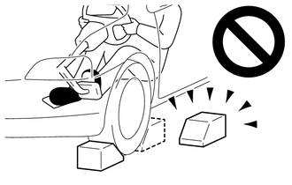
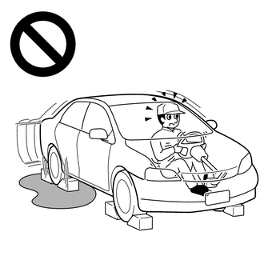
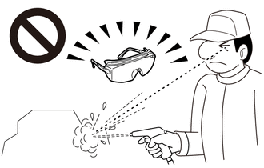

| Last Modified: 10-07-2025 | 6.11:8.1.0 | Doc ID: RM100000002K28Q |
| Model Year Start: 2024 | Model: Tacoma HV | Prod Date Range: [03/2024 - ] |
| Title: L580F (HYBRID TRANSMISSION / TRANSAXLE): HYBRID TRANSMISSION SYSTEM: PRECAUTION; 2024 - 2026 MY Tacoma HV [03/2024 - ] | ||
PRECAUTION
PRECAUTION FOR DISCONNECTING CABLE FROM NEGATIVE AUXILIARY BATTERY TERMINAL
NOTICE:
- After the ignition switch is turned off, there
may be a waiting time before disconnecting the
negative (-) auxiliary battery terminal.
Click here
![2024 - 2026 MY Tacoma Tacoma HV [12/2023 - ]; SETUP: WHEN DISCONNECTING OR RECONNECTING BATTERY TERMINAL: BEFORE DISCONNECTING BATTERY](../../../../stylegraphics/info.gif)
- When disconnecting and reconnecting the auxiliary
battery.
HINT:
When disconnecting and reconnecting the auxiliary battery, there is an automatic learning function that completes learning when the respective system is used.
Click here
PROCEDURES NECESSARY WHEN ECU OR OTHER PARTS ARE REPLACED
NOTICE:
- Perform utility when parts related to the
automatic transmission are replaced.
Click here
- When the TCM is replaced, update the ECU security
key.
Click here
HANDLING PRECAUTIONS
CAUTION:

- Do not perform a stall test if there are any people or objects near the vehicle.
- The vehicle could begin moving suddenly, resulting in a serious accident.

- Do not perform a stall test if any wheel chocks are out of position.
- The vehicle could begin moving suddenly, resulting in a serious accident.

- Do not perform the stall test on a slippery or low-friction surface that could allow the tires to spin.
- The vehicle could begin moving suddenly, resulting in a serious accident.
- Do not blow compressed air without wearing safety glasses. 
- Automatic Transmission Fluid (ATF) could enter your eyes, possibly resulting in blindness.
NOTICE:
- The automatic transmission is composed of precision-made parts. Careful inspection before reassembly is necessary because even a small nick could cause fluid leakage or affect performance.
- The procedures are organized so that you work on only one component group at a time. This will help avoid confusion with similar-looking parts of different sub-assemblies being on your workbench at the same time.
- The component groups are inspected and repaired from the converter housing side.
- Whenever possible, complete the inspection, repair and reassembly before proceeding to the next component group. If a defect is found in a certain component group during reassembly, inspect and repair this group immediately. If a component group cannot be assembled because parts are being ordered, be sure to keep all parts of the group in a separate container while proceeding with disassembly, inspection, repair and reassembly of other component groups.
- Use of Toyota Genuine ATF WS is recommended.
- All disassembled parts should be washed clean, and compressed air should be blown through any fluid passages and holes.
- Dry all parts with compressed air. Never use a piece of cloth.
- The recommended ATF or kerosene should be used for cleaning.
- After cleaning, the parts should be arranged in the order they were removed for efficient inspection, repair and reassembly.
- New discs for the brakes and clutches must be soaked in ATF for at least 15 minutes before reassembly.
- All oil seal rings, clutch discs, clutch plates, rotating parts, and sliding surfaces should be coated with ATF prior to reassembly.
- All old gaskets and rubber O-rings must be replaced.
- Do not apply adhesive cement to gaskets or similar parts.
- Make sure that the ends of snap rings are not aligned with any cutouts. Make sure that snap rings are correctly installed into the grooves.
- If a worn bushing is to be replaced, the sub-assembly containing the bushing must also be replaced.
- Check the thrust bearings and races for wear or damage. Replace them if necessary.
- Use petroleum jelly to keep parts in place.